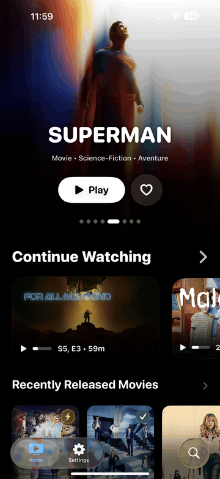

Lancement net
L’app arrive vite à l’essentiel, sans sensation de couche web ni friction de démarrage.
Client Jellyfin premium pour iPhone et iPad
Une app iPhone et iPad 100% native, rapide, fluide et optimisée pour la lecture vidéo Apple.




100% natif
ReelFin n’essaie pas de faire “comme une app Apple”. Il est conçu dès le départ avec les briques Apple qui comptent pour la lecture, la fluidité et le confort visuel.
L’app arrive vite à l’essentiel, sans sensation de couche web ni friction de démarrage.
Bibliothèque, fiche titre et lecture restent cohérentes, fluides et lisibles sur toute la surface iOS.
Les écrans reviennent vite, les visuels tiennent mieux, et la bibliothèque reste agréable même avant la fin du sync.
Direct Play, expliqué simplement
Quand le fichier est déjà compatible, ReelFin le lit directement sans demander au serveur de le convertir.
Résultat : lecture plus rapide, qualité préservée, serveur moins sollicité. Pour l’utilisateur, ça se traduit simplement par une vidéo qui démarre vite et proprement.
Avec ReelFin en Direct Play
Quand le serveur doit convertir
Performance et sensation
L’interface arrive avec présence, sans lourdeur visuelle ni mécanique.
Les écrans s’enchaînent avec une sensation continue, pas avec des ruptures.
Les frameworks vidéo natifs gardent la lecture au cœur de l’expérience.
ReelFin donne à votre serveur média personnel le niveau de finition d’une grande app iOS.
ReelFin
Natif, rapide, élégant et pensé pour la lecture vidéo. Une expérience personnelle, premium et sans détour.